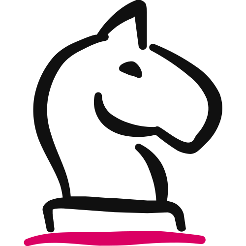

Foundations · 5 of 5 · Before the Engine
Competitive Landscape
Everything your buyer weighs you against: the other coach, the course, the free videos, and doing nothing. Mapped once, so every message you write knows what it's standing next to.

You'll leave with your Competitive Landscape: your market in a line, three to five alternatives your buyer weighs you against, what they do instead, the gaps, your edge against each alternative, where your prices sit, and the before-you pattern. With it, all five Foundations are done.
- Your buyer never compares you to nothing. They weigh you against the rival, the course, the free videos and doing nothing. 01
- There are four kinds of alternative. Most coaches only name the first, and the money usually goes to the last two. 04
- Different, not better. Your stance from the Profile, aimed at each alternative, in something the buyer can see. 05
- The Builder does it with you. Six moves, about twenty minutes, one question at a time. 09
- Then you start the Engine. All five Foundations locked, and Step 1 reads everything you built. 11
01
The Ground You Sell On
Your Competitive Landscape is the map of the ground you sell on: who else serves your people, what your buyer compares you to, where the gaps are, and the lane you hold.
Here's the thing nobody tells you about competition. Your buyer never compares you to nothing.
Before they say yes to you, they weigh you against the other coach, the course they bought last year, the free videos they've watched for months, and the option of doing nothing at all.
That whole set is your competition. Not just the people with a title like yours.
Map it honestly and every message you write knows exactly what it's standing next to. Skip it and you sound like one more option that sounds like all the rest.
Four kinds of alternative, and most coaches only name one. Direct competitors, adjacent solutions, DIY and free, and doing nothing. The last two are usually where the money actually goes.
What it is not
It's not your positioning. Your lane and your stanceWhat you believe, do or refuse to do that most people in your space don't. It's written once, in your Business Brand Profile. are set in your Business Brand Profile. This document tests them against the field. It never rewrites them.
It's not your pricing. Your three levels live in Offer Pricing. This document only records where those prices sit against the field.
It's not your buyer. Who they are, their day and their objections belong to The Golden Avatar™. This records what the market offers them and what they've already tried.
It's not the copy. Your SCORE™ Card and your Enrollment Doc write the finished lines. This hands them the raw material.
And it's not a research project. Twenty minutes, nine questions, one document. Anything you don't know yet gets marked, not guessed.
Different, not better. "Better" is a claim your buyer can't check and every competitor makes. "Different" is something they can see.
02
Where It Fits
Competitive Landscape is Foundation 5 of 5, the last one. It comes after Offer Pricing, because it reads your stance from the Profile and places your prices against the field.
The five Foundations come before Step 1 of The $100K Day Engine™. Finish this one and the ground is laid.
| Foundation | Document | What it gives you |
|---|---|---|
| 1 | Business Brand Profile | What you believe, why you exist, where you're going |
| 2 | Visual Style Guide | How your brand looks: your Brand Kit |
| 3 | Brand Voice | How your brand sounds: words, tone, rhythm |
| 4 | Offer Pricing | What you sell, at three levels, and what each costs |
| 5 · You are here | Competitive Landscape | Who else serves your people, and the lane you hold |
Nothing is required before it, but two Foundations make it sharper. Your Business Brand Profile gives it your stance, the edge it tests. Offer Pricing gives it your three levels, the prices it places.
Figure 02 · The $100K Day Engine™. Three pillars, nine steps. The five Foundations come before Step 1, and this is the last of them.
Downstream, it feeds the message.
| Where it goes | What it takes from here |
|---|---|
| $Million Promise™ | The obstacle your buyer has been fighting |
| The Golden Avatar™ | The failed attempts |
| SCORE™ Card | The block that debunks the usual fix, and the block that says why your system works when nothing else did |
| Red Diamond Offer™ Enrollment Doc | Answers to the objections the alternatives create |
| Event Magnet™ | What it proves is what the alternatives couldn't |
| Goliath Content™ | The gaps become angles |
With no map, your messaging describes you in a vacuum. Your buyer isn't in a vacuum. They're holding you up against the free videos and the course they already own.
With "better" as your edge, you've said what every competitor says, and the only thing left to compete on is price.
03
How You'll Build It
You build it in six moves. The Builder asks one question at a time, tells you why it matters, and shows you an example.
| Move | What you pin down |
|---|---|
| 1 · Your market | The space you're in, in a line, the way a buyer would say it |
| 2 · The alternatives | Three to five things your buyer weighs you against, at least one that isn't a coach, each with what it offers, what it costs, what it does well and where it falls short |
| 3 · What your buyer does instead | The real competition, and why it feels reasonable to them |
| 4 · The gaps | What the whole field gets wrong, overlooks or ignores |
| 5 · Your edge | Your stance, aimed at each alternative, then where your three levels sit on price |
| 6 · The before-you pattern | What people usually tried before they found you, and why it didn't stick |
Nine questions, about twenty minutes. Then the Builder runs a Ready Check and hands you the document.
"I don't know their price" is a real answer
Most people know their craft far better than the field around it. The Builder never pushes you to invent a rival's price, a weakness you haven't seen, or an edge that isn't true yet.
A guessed price is written down and marked UNVERIFIEDA marker for a number you guessed, with a note on what to check. It stays in the document so you know to check it., with a note on what to check. A gap you can't see yet is marked none yetThe honest answer when nothing true has landed yet. It passes the Ready Check..
Both pass the Ready Check. A map with honest blanks beats a map full of guesses.
04
The Four Kinds of Alternative
Before you list anyone, know what you're listing. Your buyer weighs four kinds of option, and the first is the one most coaches stop at.
| Kind | What it is | Why it matters |
|---|---|---|
| Direct competitor | Same promise, same kind of buyer, a title like yours | The obvious one, and often not where the money goes |
| Adjacent solution | A different kind of thing that solves the same problem: a tool, a book, an agency, another profession | Your buyer often tries this before they'd ever think of a coach |
| DIY and free | YouTube, podcasts, free groups, figuring it out alone | Cheap, endless, and the reason "I'll do it myself" feels reasonable |
| Doing nothing | Living with the problem | The biggest competitor most coaches never name. Nobody can be wrong about it |
Figure 04 · The four kinds of alternative. List three to five in total, with at least one from outside the first row.
The answer to "what does your buyer do instead of buying" is almost always one of the last two.
05
The Six Moves, In Full
Each move is one or two questions. Here's what each is for, how to answer it well, and the trap that catches people.
Your MarketThe space, in a line
The aisle your buyer is standing in when they find you, said the way they'd say it, not the way a brochure would.
Why it matters. The alternatives only make sense inside the space. Name the space and the field sorts itself out.
How to find yours
Ask what your buyer would type into a search box the night the problem gets loud. That phrase is usually your market.
"Personal development." That's a shelf with a thousand products on it, and your buyer isn't standing at it.
"Sleep coaching for parents of babies and toddlers. The field is other sleep consultants, a couple of big-name courses, the baby books, and a lot of free content."
The trap: answering with your stance. "I'm the gentle sleep coach" is your edge, and it comes in Move 5. First, the space itself.
The AlternativesWhat your buyer weighs you against
Three to five options your buyer considers instead of you, with four things for each: what it offers, roughly what it costs, what it does well, and where it falls short.
Why it matters. Your messaging stands next to these whether you name them or not. Named, you can be different from them on purpose. And the "does well" column keeps you honest. A rival with no strengths is a rival you've imagined.
How to find yours
Start with the two or three names your buyers mention. Then add at least one that isn't a coach: the course, the app, the free channel, or doing nothing.
Can't name any? Ask what your buyer would search for on Google or YouTube instead of finding you.
"Two other coaches. They're not as good as me." No strengths, no price, no detail, and the edge leaking in where the facts should be.
"The online course: a self-paced video library with a community. Does well: thorough, and you can start tonight. Falls short: nobody checks whether you actually did it."
The trap: guessing a price and writing it as fact. The Builder keeps your guess and marks it UNVERIFIED, with a note to check their page.
What Your Buyer Does InsteadThe real competition
What your ideal buyer is actually doing about the problem today, instead of buying from you, and why that feels reasonable to them.
Why it matters. Most people who should buy from you aren't choosing a rival. They're doing it themselves, watching free content, or doing nothing. That's who you're really up against.
How to find yours
Describe their Tuesday. Not "they don't take it seriously," but what they actually do. Search at two in the morning? Buy another book? Try a new trick every night?
"They're lazy." A judgement, not a behaviour, and nothing you can write a message to.
"Searching 'baby won't sleep' at two in the morning and trying a new trick every night. It feels reasonable because every trick works for someone, and none of them cost anything."
The trap: only naming the buyers who choose a rival. Ask about the ones who don't buy from anyone. They're the bigger group.
The GapsWhat the whole field overlooks
Looking at every alternative at once: what the field gets wrong, overlooks or ignores. What your buyer keeps needing that nobody gives them.
Why it matters. The gaps are where your edge lives and where your content comes from. Everything the field ignores is something you can own.
How to find yours
A real gap is something your buyer would feel. If they wouldn't notice it, it's a note, not a gap.
If the gap is a feature you sell, dig for the need underneath it: speed, accountability, being seen.
"Their branding is weak." You'd notice. Your buyer wouldn't.
"Everyone sells the method. Nobody deals with the fact that the parent is too tired to follow any method consistently."
The trap: listing your features as gaps. "Nobody offers voice-message access" is a feature. The gap is what the buyer gets from it.
Your EdgeYour stance, tested against the field
Your stance from the Business Brand Profile, aimed at each alternative in turn. Against this one, what do you do, believe or refuse to do that they don't, that your buyer would notice?
Then, if you've built Offer Pricing, where each of your three levels sits on price against the field, and why.
Why it matters. "Better" is a claim your buyer can't check. "Different" is something they can see, and it's why they choose.
How to find yours
Read your stance back, then take the alternatives one at a time. Your edge against the course is rarely the same as your edge against doing nothing. One line each.
"I'm more experienced and I genuinely care." Every alternative says that too. The Builder won't write it down.
"Against the course: I check, every week. Against the free videos: one method, in order. Against doing nothing: a plan that takes less energy than another bad night."
The trap: rewriting your stance here because the field exposed it. That's the test working. But the stance lives in your Profile. Update it there, and this document reads the new one.
The Before-You PatternWhat they tried, and why it didn't stick
What the people who end up working with you usually tried first, and why it didn't stick. It's recorded as raw material. The Builder doesn't write copy here.
Why it matters. Your $Million Story™ names this pattern, your Golden Avatar™ records it as failed attempts, and your SCORE™ Card turns it into the block that says why your system works. Capture it once, plainly.
How to find yours
Two halves, and the second matters more. What did they try? And what did it fail to give them?
If the answer is "they didn't try hard enough," dig. What did the thing they tried fail to provide?
"They tried a few things." No names, no reason, nothing a story can be built from.
"A course they never finished, then a cheaper coach who gave them a plan and disappeared. It didn't stick because nobody was watching whether they did it."
The trap: polishing it into copy. This is the ore, not the ring. Your SCORE™ Card does the polishing.
06
Before and After
Here's a solo sleep coach for parents of under-threes, with her Profile and Offer Pricing already built.
"Two other consultants. They're not as gentle as me."
One kind of alternative, no strengths, no prices, and "better" sitting where the edge should be.
- Alternatives: a well-known online course (price UNVERIFIED, to check), two other consultants, the free videos, and doing nothing
- Instead: searching at two in the morning and trying a new trick every night
- Gap: nobody deals with a parent too tired to follow a method. Nobody checks.
- Prices: her membership sits above the course and below the other consultants, because it has a person in it and doesn't pretend to be 1-on-1
- Before her: a course never finished, then a consultant who gave a plan and disappeared
Her edge: against the course, she checks every week. Against the free videos, one method in order. Against doing nothing, a plan that takes less energy than another bad night.
Figure 06 · Same coach, same market. An illustrative example: it shows the level of answer, not a market to copy. No real company, person or product is named, and the Builder never names one for you.
Twenty minutes, one UNVERIFIED price to check, and a map her $Million Story™, Golden Avatar™ and SCORE™ Card can all read.
07
The Hard Rules
These keep your map honest and useful to every tool after it. The Builder holds you to every one.
- Different, not better. "More experienced," "higher quality" and "I care more" are never recorded as an edge. If nothing different lands, the document says none yet.
- Three to five alternatives, at least one that isn't a coach. The course, the app, the free channel, or doing nothing.
- Every alternative gets its strengths. A rival with nothing going for it is a rival you've imagined.
- Nothing invented. No competitor, price, weakness, statistic or trend you didn't bring. A guessed price is kept and marked UNVERIFIED.
- You name the alternatives. The Builder never names a company, person or product for you.
- Your stance is tested here, set in the Profile. If the field exposes it, sharpen it in your Business Brand Profile.
- Your prices are placed here, set in Offer Pricing. Above, alongside or below, with a reason, and never changed here.
- The before-you pattern is raw material. Your SCORE™ Card writes the finished block.
- Nothing from another document. No avatar, no copy, no rewritten positioning, no pricing decisions.
- A marked unknown is fine. UNVERIFIED, none yet, and "build Offer Pricing first" all pass.
08
How It's Checked
This Foundation isn't scored out of 25. It's the truth about the field, written plainly.
So it passes a Ready Check instead: every item a clear yes, or honestly marked.
| Part | It passes when… |
|---|---|
| Market | Named in a line, the way a buyer would say it |
| Alternatives | Three to five, at least one that isn't a direct competitor, each with all four things filled or marked |
| Instead | A behaviour, with the reason it feels reasonable |
| Gaps | Things the buyer would feel, or none yet |
| Edge | Your stance aimed at each alternative, and not one line says "better" |
| Prices | Your three levels placed against the field with a reason, or marked for when Offer Pricing is built |
| Before-you pattern | What they tried and why it didn't stick, marked as raw material |
The Builder also checks that nothing from another document crept in, and that the document says "I" or "we" the way your Profile does.
09
Build Your Landscape
Now you build it. Plan on about twenty minutes, and take longer if you need to.
The Competitive Landscape Builder
It reads your Profile and your three levels, walks you through all six moves, runs the Ready Check and hands you one document. It asks one question at a time, tells you why, and shows you an example.
Paste the whole prompt as it is. The length is instructions for the AI, not work for you.
- Copy the prompt. Use the button above, or download the file.
- Open a new chat. In Claude, start it inside your $100K Day AI Workspace project so it can read your Foundations. ChatGPT works too.
- Paste it and send. The Builder says hello and asks for your Business Brand Profile and Offer Pricing. If you have neither yet, say so. Check: it asks one question, then waits.
- Answer one question at a time. Six moves: Your Market, The Alternatives, What Your Buyer Does Instead, The Gaps, Your Edge, The Before-You Pattern. Say "I don't know" when it's true.
- Check the document. It runs the Ready Check before it hands it over. Check: not one edge line says "better," and every guessed price is marked UNVERIFIED.
- Save it. In your AI Workspace it goes in Reference, as
competitive-landscape.md.
10
Check Your Work
Almost every landscape that doesn't help falls into one of these seven. Check yours against each one.
Nobody does exactly what you do, so the list is empty. Your buyer is still weighing you against something.
The free videos, the course, doing nothing. There is always a field.
"More experienced, more personal, and I genuinely care." Every alternative says the same.
"I check every week" is different. "I care" is a claim.
From memory, from a year ago, or a guess. It ends up in your messaging.
Keep the guess, mark it, and check their page.
Three other coaches and nothing else. Most lost buyers never hired a coach at all.
What your buyer tries before they'd ever think of hiring someone.
Now your Profile says one thing and your landscape says another.
Then re-test it here. One source, read by everything.
"What they do instead" turns into a full portrait: age, income, a day in the life.
Save the person for The Golden Avatar™ in Step 1.
A finished paragraph of marketing that gets copied in raw, in the wrong place.
What they tried, and why it didn't stick. Plain words.
Is it ready?
- Your market is named in a line, the way a buyer would say it.
- You have three to five alternatives, at least one that isn't a direct competitor, each with what it offers, roughly what it costs (or UNVERIFIED), what it does well and where it falls short.
- You've named what your buyer does instead of buying, with the reason it feels reasonable.
- Your gaps are things the buyer would feel.
- Your edge is your stance aimed at each alternative, and not one line says "better."
- Your three levels are placed on price against the field with a reason, or marked for later.
- The before-you pattern says what they tried and why it didn't stick, marked as raw material.
- Nothing from another document is in here.
- The document says "I" or "we" the way your Business Brand Profile does.
- You could hand this to your $Million Story™ builder tomorrow and it would know exactly what you're standing next to.
11
Your Action Items
Tick these off as you go. Your ticks stay in this browser, and when they're all done the contents marks this chapter complete.
Resources for this chapter
That's all five Foundations: what you believe, how you look, how you sound, what you sell and what you're standing next to. Next, you start the Engine at Step 1 with The $Million Promise™, and it reads everything you just built.
You can't stand out if you don't know what you're standing next to. Name the field honestly, point your stance at each option, and say what's different, not what's better.
Coach Launch
Apply For Partnership Opportunity
Last updated 2026-11-12